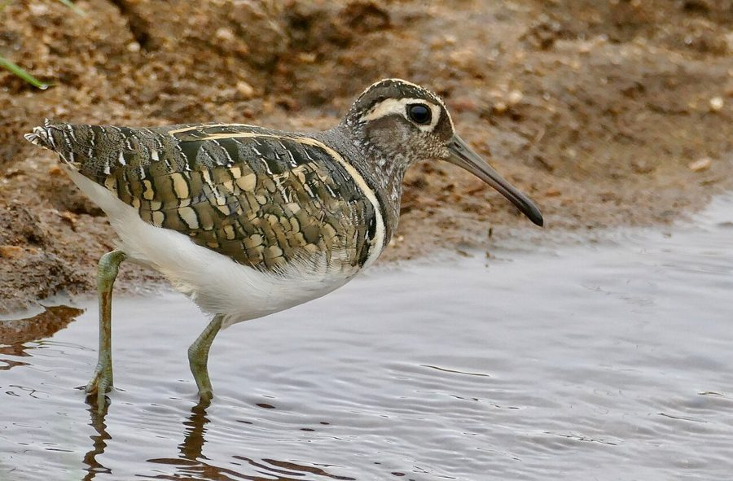

राज चाहाGreater Painted-snipe
Rostratula benghalensis · Rostratulidae · BRD-0220

- Scientific name वैज्ञानिक नाम
- Rostratula benghalensis (Linnaeus, 1758)
- Family कुल
- Rostratulidae
- Hindi हिंदी
- राज चाहा
- Local names स्थानीय नाम
- raj chaha, chaha, painted snipe, greater painted snipe
- Status here यहाँ की स्थिति
- native
- Movement आवागमन
- Resident, here all year
- Known from कहाँ दर्ज
- Others have published records from the Basti–Ayodhya districts बस्ती–अयोध्या के ज़िलों से दूसरों के प्रकाशित अभिलेख
- IUCN IUCN
- LC
- Review समीक्षा
- audited and independently read
When to look कब देखें
Present all year. साल भर मौजूद।
Uses and possibilities उपयोग और संभावनाएँ
Drawn from the documented uses in the profile below, where each is labelled traditional, current or a research lead. All uses →
Tell it apart from इनसे अलग पहचानें
राज चाहा / Greater Painted-snipe
Rostratula benghalensis (Linnaeus, 1758) — Rostratulidae
राज चाहा — यह छोटा, रंगीन वेडर पक्षी पूर्वी उत्तर प्रदेश के दलदल और धान के खेतों में साल भर पाया जाता है। नर पक्षी भूरा-हरा होता है और मादा चमकदार हरा-कपूरी होती है, जिससे यह अलग दिखती है। इसकी सबसे बड़ी पहचान इसकी लंबी, नीचे की ओर मुड़ी हुई चोंच (downcurved bill) है और आँखों के चारों ओर हल्के रंग की पट्टी है। यह अकेले रहता है या जोड़ों में, और कीड़ों के लिए दलदलों में चारा खोजता है।
Quick Identification त्वरित पहचान
| Feature | Description |
|---|---|
| Size | Small wader; 23–25 cm total length |
| Plumage | Cryptic; male brown-green, female emerald-green with buff |
| Bill | Long, straight or slightly decurved (diagnostic) |
| Eyes | Pale eye-ring; distinctive white loral patch |
| Wings | Spotted; colourful when in flight |
| Tail | Barred; relatively short |
| Behaviour | Cryptic; stays in reeds and marsh vegetation; probes in mud |
| Dimorphism | Strong sexual dimorphism; female more brightly coloured |
Field tip: A small, cryptic wader with a distinctive long, slightly downward-curved bill and pale eye-ring. Females are much more brightly coloured (emerald-green) than males (brown-green). Difficult to see as it stays in dense vegetation. Often located by distinctive calls given at dawn and dusk.
हिंदी — कैसे पहचानें:
छोटा, रंगीन वेडर।
लंबी, नीचे की ओर मुड़ी चोंच।
नर भूरा, मादा हरी।
दलदलों में छिपा रहता है।
Morphology आकारिकी
Biometrics:
| Measurement | Range |
|---|---|
| Total length | 230–250 mm |
| Wing (flattened chord) | 115–135 mm |
| Tail | 60–75 mm |
| Bill | 35–45 mm |
| Tarsus | 28–32 mm |
| Weight | 90–120 g |
Size: 23–25 cm long; wingspan 40–45 cm. Weight 90–120 g.
Plumage (male): Crown and back brown-green, streaked darker. Shoulders green. Back spotted white. Lores white; eye-ring pale buff. Throat buff. Breast and belly buff-white. Wings brown with white spots.
Plumage (female): Much more brightly coloured. Crown dark emerald-green. Back olive-green. Shoulders emerald-green. Lores and eye-ring buff. Throat buff. Breast greenish or coppery-buff. Belly buff-white. Wings darker with white spots.
Bill: Long and straight or very slightly decurved; adapted for probing in mud.
Legs and feet: Long, greenish or yellowish; adapted for wading.
Eyes: Dark; surrounded by pale or buff eye-ring.
Tail: Barred; relatively short.
Vocalisations
- Call: A distinctive harsh, churring prrrp-prrrp or crrook given frequently at dusk. Loud for the bird's size.
- Other sounds: Various clicks and clucks when alarmed or displaying.
हिंदी: तेज़ "चर्र-चर्र" आवाज़ देता है। शाम को गाता है। अलर्ट होने पर "क्लिक-क्लिक" करता है।
Behaviour & Ecology व्यवहार और पारिस्थितिकी
Wader specialist: Probes in mud and shallow water for invertebrates. Walks methodically through marshes, sometimes dabbling at the surface.
Feeding: Insects and insect larvae, small crustaceans, small molluscs. Occasionally plant matter.
Solitary and cryptic: Usually solitary or in pairs; stays in dense vegetation and is difficult to observe except when calling.
Courtship and nesting: Unusual breeding system: female polyandrous (mates with multiple males); male provides parental care while female goes to another male.
Roosting: In marsh vegetation; nocturnal roosts.
Activity: Most vocal at dusk and dawn; active throughout the day foraging.
हिंदी: अकेले या जोड़ों में रहता है। दलदलों में छिपा रहता है। कीड़े निकालने के लिए कीचड़ में लकड़ी चलाता है। शाम को तेज़ आवाज़ देता है।
Life Cycle / Phenology जीवन चक्र
Resident: Year-round resident; breeds locally (February–September, mainly March–July).
Breeding: Nest is a scrape lined with grass in marsh vegetation. Lays 3–4 buff eggs with dark spots. Male incubates and raises chicks; female may lay again with another male.
Clutch: 3–4 eggs.
Incubation: 14–16 days; male incubates.
Fledging: Chicks fledge in approximately 25–30 days.
Moult: Complete annual moult post-breeding.
हिंदी: साल भर यहाँ रहता है। मार्च से जुलाई तक प्रजनन करता है। दलदलों में घोंसला बनाता है।
Host Plants or Prey आहार
Primary food items:
- Aquatic insects and insect larvae
- Small crustaceans (shrimp, small crabs)
- Snails and small molluscs
- Worms
- Seeds and plant shoots (occasionally)
Probed from mud and shallow water; extracted from vegetation and mud surface.
हिंदी: कीड़े और छोटे केकड़े खाता है। कीचड़ में खोदता है। पानी के पौधे भी खाता है।
Predators / Natural Enemies शत्रु
- Raptors: Marsh harriers and small falcons may prey on snipes
- Snakes: Water snakes may raid nests or take chicks
- Corvids: Crows may harass or predate eggs
Agricultural / Human Relevance कृषि प्रासंगिकता
Pest control: By feeding on aquatic insects and invertebrates, may assist in natural pest control in rice paddies and wetlands.
Rice paddy inhabitant: Commonly found in rice paddies during flooding; no significant conflict with farmers.
Legal status: Protected under the Wildlife Protection Act 1972.
Expected Locally स्थानीय रूप से अपेक्षित
Not a field record. Written from published accounts for eastern Uttar Pradesh. No confirmed local sighting yet — if you have seen it, that is what the atlas needs.
अभी तक स्थानीय पुष्टि नहीं। यह विवरण प्रकाशित स्रोतों से है, किसी अवलोकन से नहीं।
GBIF holds published records from these districts. Expected year-round in marshes, reed beds, rice paddies and wetland margins. More often heard (distinctive calls at dusk) than seen. Most active at dawn and dusk. Numbers fluctuate with water availability and rice cultivation cycles. The first local record would be a photograph showing the distinctive downward-curved bill and pale eye-ring, with place and date, submitted through the About page.
हिंदी: साल भर दलदलों में देखे जाने की उम्मीद है। शाम को आवाज़ से पहचाना जा सकता है। पहला रिकॉर्ड फोटोग्राफ के साथ तारीख़ और जगह दिखानी चाहिए।
Distribution वितरण
Global range: Indian subcontinent, Southeast Asia, China and Japan. Primarily in freshwater wetlands.
In India: Widespread resident throughout the Indian peninsula in suitable wetland habitat.
In Uttar Pradesh: Resident throughout the state; expected in marshes, rice paddies and wetland areas.
In Basti district / eastern UP: Year-round resident in marshes, reed beds, rice paddies and wetland margins.
Research Questions शोध प्रश्न
- What is the detailed diet composition and foraging efficiency of greater painted-snipes in different seasons?
- How does the population fluctuate with water level and monsoon intensity?
- क्या धान की खेती की रणनीति में बदलाव से इस पक्षी की संख्या प्रभावित होती है?
- What is the sex ratio and mating system in a population? Are all females truly polyandrous?
- How extensive is the range of greater painted-snipes within the Basti–Ayodhya region? (Can be assessed through wetland surveys and call playback.)
- क्या जलवायु परिवर्तन से इसके प्रजनन का समय बदल रहा है?
Similar Species मिलती-जुलती प्रजातियाँ
| Species | Key Difference | Hindi | Field Rule | |
|---|---|---|---|---|
| [[common_snipe\ | Common Snipe]] (Gallinago gallinago) | Larger; longer bill; striped head; open grassland habitat | — | Greater painted-snipe is smaller with a shorter bill and stays in dense marsh vegetation. Common snipe prefers open marshes. |
| Pin-tailed Snipe (Gallinago stenura) | Larger; longer bill; different calls and habitat; cryptic | — | Greater painted-snipe is smaller and brighter (especially female). Pin-tailed snipe is more cryptic and prefers different habitat. |
Field rule: Greater painted-snipe is a small, colourful wader with a distinctive long but relatively short bill (compared to true snipes) and pale eye-ring. If larger and with a much longer bill, it is a true snipe. Unique sexual dimorphism (bright female, dull male) helps confirm identity.
Taxonomy & Classification वर्गीकरण
Original description. Described by Linnaeus in 1758 in Systema Naturae (10th edition) as Scolopax benghalensis. Type locality is Bengal, India.
Subspecies. Three subspecies recognised; R. b. benghalensis occurs in India.
Family and order placement. Order Charadriiformes; family Rostratulidae (painted-snipes). Unique family with only one genus (Rostratula), restricted to Africa, Asia and Australasia. Related to true snipes (Scolopacidae) but distinct.
Phylogenetic notes. Rostratulidae is a distinct family, more closely related to jacanas than to true snipes despite superficial similarities.
IUCN status rationale. Least Concern. Widespread and common in suitable wetland habitat throughout Asia.
हिंदी: एशिया में सामान्य चिड़िया है। साल भर यहाँ रहती है। कानूनी सुरक्षा में है।
Photo Gallery फोटो गैलरी
No photos yet — add field photos to media/species/greater_painted_snipe/ and run node scripts/sync_photos.js.
Wanted photos:
- Female (brightly coloured) in marsh habitat
- Close-up showing distinctive bill and eye-ring
- Probing in mud
- Pair together
References संदर्भ
- Linnaeus, C. (1758). Systema Naturae per Regna Tria Naturae (10th edn). Laurentii Salvii, Holmiae. Vol. 1, p. 145.
- Ali, S. & Ripley, S. D. (1968). Handbook of the Birds of India and Pakistan. Vol. 2 (Bustards to Owls). Oxford University Press, Delhi. Pp. 128–131.
- Grimmett, R., Inskipp, C. & Inskipp, T. (2011). Birds of the Indian Subcontinent (2nd edn). Oxford University Press, Delhi. Pp. 187.
- Rasmussen, P. C. & Anderton, J. C. (2012). Birds of South Asia: the Ripley Guide (2nd edn). Lynx Edicions, Barcelona. Vol. 2, Pp. 342.
- GBIF Occurrence Data — Rostratula benghalensis, India.
- IUCN Red List (2023). Rostratula benghalensis — BirdLife International. IUCN, Cambridge. Status: Least Concern.
Source file: species/fauna/birds/greater_painted_snipe.md